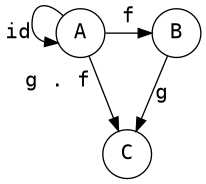
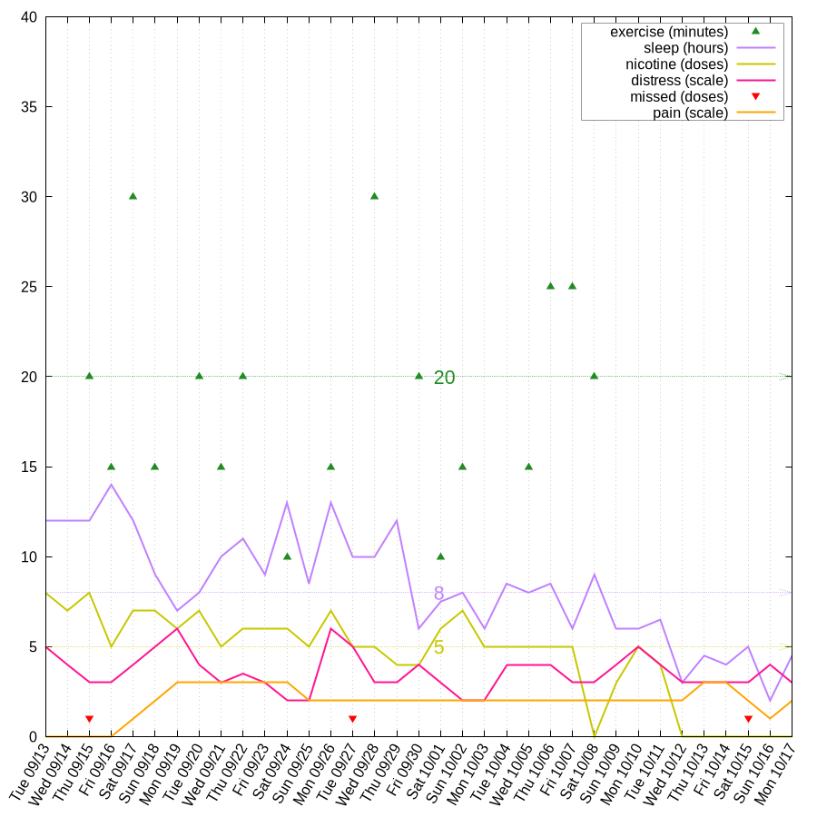

The Documentation (either in its HTML, PDF, LaTeX or in its Org-Mode format) is licensed under the GNU Free Documentation License version 1.3 or later.
The code examples are licensed under the GNU General Public License v3 or later.
|
|

|
The fusion of Doom/Emacs, Org Mode, and LaTeX presents a potent platform for crafting sophisticated thesis papers. This article provides a detailed guide on how to seamlessly integrate these tools, facilitating a smooth transition between generating HTML and LaTeX documents, as well as PDFs, all from a single Org Mode file. Furthermore, a Nix shell, accompanied by a shell.nix file, is introduced to ensure efficient management of the development environment.
Die Vereinigung von Doom/Emacs, Org Mode und LaTeX bietet eine leistungsstarke Plattform zur Verfassung eleganter Abschlussarbeiten. Dieser Artikel erläutert detailliert, wie man diese Werkzeuge optimal kombiniert, um nahtlos zwischen der Erstellung von HTML- und LaTeX-Dokumenten sowie PDFs aus einer einzigen Org-Mode-Datei zu wechseln. Zusätzlich wird eine Nix-Shell mit einer begleitenden shell.nix-Datei vorgestellt, um eine effiziente Verwaltung der Entwicklungs- und Arbeitsumgebung zu gewährleisten.
Table of Contents
List of Listings
List of Tables
- Table 1: table of library's with corresponding version
1. Introduction / Motivation:
Embarking on the journey of using GNU/Emacs with Org-Mode for thesis writing may seem like a daunting task, especially if you're unfamiliar with the intricate workings of GNU/Emacs itself. Some may question the need to delve into Org-Mode when alternatives like LaTeX are readily available and widely embraced. However, dismissing the potential of GNU/Emacs and Org-Mode prematurely might mean overlooking a transformative experience that can redefine your approach to document creation.
1.1. Why bother writing Org-Mode when I can use LaTeX instead?
While LaTeX is a formidable typesetting system, Org-Mode complements it by offering a more versatile and flexible platform for document creation. Org-Mode's simplicity and ease of use, coupled with the ability to seamlessly integrate LaTeX, provide a unique writing experience that combines the best of both worlds.
1.1.1. The possibilities with Org-Mode are endless!
- Include and evaluate code:
Integrate code seamlessly within your document, making it a dynamic and interactive platform for technical content.
- Write LaTeX in a more relaxed surrounding:
Org-Mode simplifies the LaTeX integration, providing a more user-friendly and intuitive environment for crafting your documents.
1.2. summery
For this tutorial, we will be using a distribution of GNU/Emacs called DOOM Emacs. Additionally, on our GNU/Linux platform, we'll leverage a package manager known as Nix to generate an environment for building both PDF and HTML versions of your thesis. This powerful combination of tools will enhance your writing experience and streamline the process of creating, editing, and compiling your thesis documents.
1.2.1. motivating videos
- Literate Documentation with Emacs and Org Mode
- Consistent Technical Documents Using Emacs and Org Mode
- EmacsConf 2023: Authoring and presenting university courses with Emacs and a full libre software …
- Emacs Tips - How to Give Presentations with Org Mode
- EmacsConf 2022: Health data journaling and visualization with Org Mode and GNUplot - David O'Toole
2. (Doom) GNU/Emacs setup and configuration
Start by installing Doom Emacs.
2.1. packages ~/.config/doom/package.el
After installing Doom Emacs - follow up by installing useful packages.
If you are not familiar with Doom Emacs's evil mode (which is a vim style set of key bindings in Emacs),
it might be a good idea to install evil-tutor and check out the tutorial for evil mode.
The pdf-tools (optional for this tutorial) will give you additional functionality for working with PDF documents in Doom Emacs, the most important being the support for viewing the PDF document in a Emacs buffer.
Finlay install org-special-block-extras for additional org-mode blocks for math and other usefull stuff.
Note
If you want to use the special blocks in you current org mode session - do not forget to enable it with:
M-x org-special-block-extras-mode
(package! evil-tutor) (package! pdf-tools) (package! org-special-block-extras) ;; (use-package org-special-block-extras :ensure t) (package! gnuplot) (package! gnuplot-mode)
Note
Do not forget to doom sync after adding new packages to your package.el file and reload Emacs.
2.2. config ~/.config/doom/config.el
To complete the Doom Emacs setup / configuration you only have to addapt your config.el file.
We will now add the koma latex document classes and add support for code highlighting.
;;; $DOOMDIR/config.el -*- lexical-binding: t; -*-
;; Place your private configuration here! Remember, you do not need to run 'doom
;; sync' after modifying this file!
;; ------------------------------------------------------------------------------
;; ...
;; add latex classes for org-mocde export to latex (pdf)
(after! org
(setq org-latex-classes
'(("article" "\\documentclass[11pt]{article}"
("\\section{%s}" . "\\section*{%s}")
("\\subsection{%s}" . "\\subsection*{%s}")
("\\subsubsection{%s}" . "\\subsubsection*{%s}")
("\\paragraph{%s}" . "\\paragraph*{%s}")
("\\subparagraph{%s}" . "\\subparagraph*{%s}"))))
(add-to-list 'org-latex-classes
'("koma-book" "\\documentclass{scrbook}"
("\\chapter{%s}" . "\\chapter*{%s}")
("\\section{%s}" . "\\section*{%s}")
("\\subsection{%s}" . "\\subsection*{%s}")
("\\subsubsection{%s}" . "\\subsubsection*{%s}")
("\\paragraph{%s}" . "\\paragraph*{%s}")
("\\subparagraph{%s}" . "\\subparagraph*{%s}")))
(add-to-list 'org-latex-classes
'("koma-article"
"\\documentclass{scrartcl}"
("\\section{%s}" . "\\section*{%s}")
("\\subsection{%s}" . "\\subsection*{%s}")
("\\subsubsection{%s}" . "\\subsubsection*{%s}")
("\\paragraph{%s}" . "\\paragraph*{%s}")
("\\subparagraph{%s}" . "\\subparagraph*{%s}")))
)
;; for syntax highlighting in org-mode
;; (setq org-latex-src-block-background 'minted
(setq org-latex-listings 'minted
org-latex-packages-alist '(("" "minted"))
org-latex-pdf-process
'("pdflatex -shell-escape -interaction nonstopmode -output-directory %o %f"
"pdflatex -shell-escape -interaction nonstopmode -output-directory %o %f"
"pdflatex -shell-escape -interaction nonstopmode -output-directory %o %f"))
;; ------------------------------------------------------------------------------
Note
Before running SPC-h-r-r (M-x doom/reload) - either wait for the nix env setup or
install pygments yourself via pip3 install pygments.
3. nix shell environment
Now that Emacs is ready - we can procued by declaring an shell.nix environment file, in which we will
specify all the packages we will use for compiling the org-mode file and all library's and other stuff used in the thesis (e.g. numpy python haskell).
We will use gnuplot for plotting stuff, graphics for generating nice graphs in the dot language.
In addition we need texlive and therefore can use tikz to generate nice plots/graphs.
Last but not least, we install the pygments lib we are using for highlighting the code blocks in addition to the
python packages used in the source code in the thesis.
If you want to install haskell or R for your thesis and haven't done so system wide - this might be a good opportunity to add the software.
Install Nix (the package manager)
sh <(curl -L https://nixos.org/nix/install) --daemon
cat shell.nix
{ pkgs ? import <nixpkgs> {} }:
pkgs.mkShell {
buildInputs = with pkgs; [
(python310.withPackages(ps: with ps; [
numpy # for math
latexify-py # for converting python funcs to latex
scipy # for math and physics
pygments # for syntax highlighting
matplotlib # for plotting
seaborn # for plotting
scikit-learn # for ml stuff
]))
texlive.combined.scheme-full
graphviz
gnuplot
];
shellHook = ''
echo "entering dev environment"
'';
}
Run nix-shell to enter the now defined development environment.
After entering our specified environment - you can run make doom to start Doom Emacs.
4. start messing around
Since everything should be ready by now - please feel free to mess around with the README.org file within Emacs.
start the nix development environment
nix-shell # schould open a nix shell with all the packages defined in the local shell.nix config
open doom Emacs form within the development environment
make doom # should open a new doom emacs window (from within the nix shell)
open
README.orgin doom Emacs, you could either open a file with M-x
diredor by usingSPC-.mess around
Finlay adapt the
README.orgfile for your needs or just explore the file from within Emacs.
Export to HTML and PDF
You can export your derivative with the key binding: C-c C-e
5. convert python 2 latex
import math import numpy as np import scipy import latexify
| latexify._version__ | '0.0.0a0' |
| np._version__ | '1.24.2' |
| scipy._version__ | '1.10.1' |
With the imported library's, we can now convert a python function to latex
1: def recHelper(x: int, d: int = 3) -> int: 2: # forall x in [3, infty) 3: if x % 2 == 0: 4: return 0 5: elif d > math.floor(math.sqrt(x)): 6: return 1 7: elif x % d == 0: 8: return 0 9: else: 10: return recHelper(x, d + 2) 11: 12: def isPrime(x: int) -> int: 13: if x <= 1: # forall x in (infty, 1] : 1 14: return 0 15: elif x == 2: 16: return 1 17: else: # forall x in (2, infty) 18: return recHelper(x, 3)
In line 12 is the main definition of the recursive basecase. Line 1 starts by declaring a recursive helper for the main prime checking function.
\[ \mathrm{isPrime}(x) = \left\{ \begin{array}{ll} {0}, & \mathrm{if} \ {x \le {1}} \\ {1}, & \mathrm{if} \ {x = {2}} \\ \mathrm{recHelper}\left(x, {3}\right), & \mathrm{otherwise} \end{array} \right. \]
\[ \mathrm{recHelper}(x, d) = \left\{ \begin{array}{ll} {0}, & \mathrm{if} \ {x \mathbin{\%} {2} = {0}} \\ {1}, & \mathrm{if} \ {d > \left\lfloor{\sqrt{x}}\right\rfloor} \\ {0}, & \mathrm{if} \ {x \mathbin{\%} d = {0}} \\ \mathrm{recHelper}\left(x, d + {2}\right), & \mathrm{otherwise} \end{array} \right. \]
Now we can call the isPrime function with the parameter 5 and 6:
- is
5a prime number? result ofisPrimefunction:True - is
6a prime number? result ofisPrimefunction:False
6. Function composition
Graph using the dot language
digraph G {
node [shape=circle, fontname="Courier", fontsize=16]
edge [fontname="Courier", fontsize=16]
A:nw -> A [label="id"]
A -> B [label="f"]
B -> C [label="g"]
A -> C [xlabel="g . f "]
{rank=same; A B}
}

Figure 1: function composition and identity
Graph using latex tikz picture
7. Some random Proof
Let
\[ A = \begin{pmatrix} 1 & 0 & 0 \\ 0 & 1 & 0 \\ 1 & 0 & 1 \end{pmatrix} \in \mathbb{R}^{3 \times 3}. \]
Proof that the following applies to all \(\beta \in \mathbb{N}_{>0}\) :
\[ A^\beta = \begin{pmatrix} 1 & 0 & 0 \\ 0 & 1 & 0 \\ \beta & 0 & 1 \end{pmatrix}. \]
\enquote{Matrix multiplication as composition | Chapter 4, Essence of linear algebra} footnote \url{https://youtu.be/XkY2DOUCWMU} The Matrix \(A\) can also be interpreted as a linear transformation in \(\R^3\).
\begin{figure}[!htb] \centering \includegraphics[width=7cm]{rotate_shear_record.png} \caption{Composition of Transformations} Source: \url{https://www.3blue1brown.com/lessons/matrix-multiplication} \label{fig:my_label_01} \end{figure}This interpretation makes it easier to understand the theorem to be proven, and makes it seem almost trivial.
\begin{figure}[!h] \centering \label{fig:my_label} \begin{tikzpicture} \begin{scope} \tdplotsetmaincoords{70}{110} \draw (0,0,0) node[above left] {}; \draw[thick, ->] (0,0,0) -- (2,0,0) node[anchor=north west]{$y$}; \draw[thick, ->] (0,0,0) -- (0,2,0) node[anchor=south west]{$z$}; \draw[thick, ->] (0,0,0) -- (0,0,2) node[anchor=south east]{$x$}; \draw[thick, ->,green] (0,0,0) -- (1,0,0) node[anchor=north east] {$\vec{j}$}; \draw[thick, ->,red] (0,0,0) -- (0,1,0) node[anchor=north west]{$\vec{k}$}; \draw[thick, ->,blue] (0,0,0) -- (0,1,1) node[anchor=south east]{$\vec{i}$}; % \tdplotdrawarc{(0,0,0)}{0.5}{0}{110}{anchor=north}{$\phi$} \end{scope} \begin{scope}[shift={(5, 0)}] \draw[thick, <->] (0, -0.5) -- (0, 2) node[anchor=south west]{$z$}; \draw[thick, <->] (-0.5, 0) -- (2, 0) node[anchor=north west]{$x$}; \draw[thick, ->,blue] (0, 0) -- (1, 1) node[anchor=west]{$\vec{i}_1$}; \draw[thick, ->,blue] (0, 0) -- (1, 2) node[anchor=west]{$\vec{i}_2$}; \draw[thick, ->,blue] (0, 0) -- (1, -0.5) node[anchor=west]{$\vec{i}_{-0.5}$}; \draw[dashed, <->] (1, -0.7) node[anchor=north west]{$1$} -- (1, 2.2); %\tdplotdrawarc{(0,0)}{0.7}{0}{45}{}{}; \end{scope} \end{tikzpicture} \caption{$\R^3$ with linearer transformation $A^1$} \end{figure}\[ \text{With} \vec{i} = (1, 0, \beta)^T \text{ and } \vec{j} = (0, 1, 0)^T \text{ and } \vec{k} = (0, 0, 1)^T. \]
This means that only the \(x\) coordinate is transformed. No matter how often you exponentiate this transformation, the \(y\) and \(z\) axes will not change, but the \(x\) axis will increasingly approach the \(y\) axis.
\(\mathrm{Z\kern-.3em\raise-0.5ex\hbox{Z}}\)
\[ \forall \beta \in \N^* \mid \begin{pmatrix} 1 & 0 & 0 \\ 0 & 1 & 0 \\ 1 & 0 & 1 \end{pmatrix}^\beta = \begin{pmatrix} 1 & 0 & 0 \\ 0 & 1 & 0 \\ \beta & 0 & 1 \end{pmatrix} \]
\induction{\beta}
\indv
\[ \begin{pmatrix} 1 & 0 & 0 \\ 0 & 1 & 0 \\ 1 & 0 & 1 \end{pmatrix}^\beta = \begin{pmatrix} 1 & 0 & 0 \\ 0 & 1 & 0 \\ \beta & 0 & 1 \end{pmatrix} \]
\vspace{1cm}
\rem
\begin{quote} $~~$\\ \indb{\beta}{0} is also a valid starting point ... \end{quote}\vspace{1cm}
\indb{\beta}{1}
\[ \begin{pmatrix} 1 & 0 & 0 \\ 0 & 1 & 0 \\ 1 & 0 & 1 \end{pmatrix}^1 = \begin{pmatrix} 1 & 0 & 0 \\ 0 & 1 & 0 \\ 1 & 0 & 1 \end{pmatrix} \]
\inds{\beta}
\begin{align} \begin{pmatrix} 1 & 0 & 0 \\ 0 & 1 & 0 \\ 1 & 0 & 1 \end{pmatrix}^{\beta + 1} &= \begin{pmatrix} 1 & 0 & 0 \\ 0 & 1 & 0 \\ (\beta + 1) & 0 & 1 \end{pmatrix} \\ \Leftrightarrow \begin{pmatrix} 1 & 0 & 0 \\ 0 & 1 & 0 \\ 1 & 0 & 1 \end{pmatrix}^\beta \cdot \begin{pmatrix} 1 & 0 & 0 \\ 0 & 1 & 0 \\ 1 & 0 & 1 \end{pmatrix} &= \begin{pmatrix} 1 & 0 & 0 \\ 0 & 1 & 0 \\ (\beta + 1) & 0 & 1 \end{pmatrix} \\ \xLeftrightarrow{\star} \begin{pmatrix} 1 & 0 & 0 \\ 0 & 1 & 0 \\ \beta & 0 & 1 \end{pmatrix} \cdot \begin{pmatrix} 1 & 0 & 0 \\ 0 & 1 & 0 \\ 1 & 0 & 1 \end{pmatrix} &= \begin{pmatrix} 1 & 0 & 0 \\ 0 & 1 & 0 \\ (\beta + 1) & 0 & 1 \end{pmatrix} \\ \Leftrightarrow \begin{pmatrix} 1 & 0 & 0 \\ 0 & 1 & 0 \\ \beta + 1 & 0 & 1 \end{pmatrix} &= \begin{pmatrix} 1 & 0 & 0 \\ 0 & 1 & 0 \\ \beta + 1 & 0 & 1 \end{pmatrix} \end{align}8. plotting functions and their root function / derivation
8.1. python
import numpy as np import matplotlib.pyplot as plt import seaborn as sns # Set seed for reproducibility np.random.seed(42) # Generate random 5x5 covariance matrix cov_matrix = np.random.rand(5, 5) cov_matrix = np.dot(cov_matrix, cov_matrix.T) # Generate random data with the specified covariance matrix data = np.random.multivariate_normal(mean=[0, 0, 0, 0, 0], cov=cov_matrix, size=100) # Create scatter plot plt.figure(figsize=(12, 6)) # Scatter plot plt.subplot(1, 3, 1) sns.scatterplot(x=data[:, 0], y=data[:, 1]) plt.title('Scatter Plot') # Box plot plt.subplot(1, 3, 2) sns.boxplot(data=data) plt.title('Box Plot') # Violin plot plt.subplot(1, 3, 3) sns.violinplot(data=data, inner='quartile', palette='muted') plt.title('Violin Plot') plt.tight_layout() # plt.show() plt.savefig("random-py-plot.png")

import seaborn as sns import matplotlib.pyplot as plt from sklearn.datasets import load_iris import numpy as np # Load the Iris dataset from scikit-learn iris = load_iris() iris_data = iris.data iris_feature_names = iris.feature_names # Create a covariance matrix cov_matrix = np.cov(iris_data, rowvar=False) # Create a heatmap using Seaborn plt.figure(figsize=(8, 6)) sns.heatmap(cov_matrix, annot=True, cmap='coolwarm', xticklabels=iris_feature_names, yticklabels=iris_feature_names) plt.title('Covariance Matrix of Iris Dataset Features') # plt.show() plt.savefig("random-covariance-fig.png")

8.2. tikzpicture
8.3. org plot
see https://orgmode.org/manual/Org-Plot.html
| Sede | Max cites | H-index |
|---|---|---|
| Chile | 257.72 | 21.39 |
| Leeds | 165.77 | 19.68 |
| Sao Paolo | 71.00 | 11.50 |
| Stockholm | 134.19 | 14.33 |
| Morelia | 257.56 | 17.67 |

| Format | Fine-grained-control | Initial Effort | Syntax simplicity | Editor Support | Integration's | Ease-of-referencing | Versatility |
|---|---|---|---|---|---|---|---|
| Word | 2 | 4 | 4 | 2 | 3 | 2 | 2 |
| LaTeX | 4 | 1 | 1 | 3 | 2 | 4 | 3 |
| Org Mode | 4 | 2 | 3.5 | 1 | 4 | 4 | 4 |
| Markdown | 1 | 3 | 3 | 4 | 3 | 3 | 1 |
| Markdown + Pandoc | 2.5 | 2.5 | 2.5 | 3 | 3 | 3 | 2 |

| Sede | Max cites | |
|---|---|---|
| Chile | 257.72 | WWWWWWWWWWWW |
| Leeds | 165.77 | WWWWWWWh |
| Sao Paolo | 71.00 | WWW; |
| Stockholm | 134.19 | WWWWWW: |
| Morelia | 257.56 | WWWWWWWWWWWW |
| Rochefourchat | 0.00 | |
| test … | 42.0 | WW |
8.4. gnu plot
see https://gitlab.com/dto/health-template/-/tree/main?ref_type=heads by David O'Toole
| Date | exercise minutes | sleep hours | nicotine doses | distress scale | missed doses | pain scale |
|---|---|---|---|---|---|---|
| 0 | 12 | 8 | 5 | 0 | 0 | |
| 0 | 12 | 7 | 4 | 0 | 0 | |
| 20 | 12 | 8 | 3 | 1 | 0 | |
| 15 | 14 | 5 | 3 | 0 | 0 | |
| 30 | 12 | 7 | 4 | 0 | 1 | |
| 15 | 9 | 7 | 5 | 0 | 2 | |
| 0 | 7 | 6 | 6 | 0 | 3 | |
| 20 | 8 | 7 | 4 | 0 | 3 | |
| 15 | 10 | 5 | 3 | 0 | 3 | |
| 20 | 11 | 6 | 3.5 | 0 | 3 | |
| 0 | 9 | 6 | 3 | 0 | 3 | |
| 10 | 13 | 6 | 2 | 0 | 3 | |
| 0 | 8.5 | 5 | 2 | 0 | 2 | |
| 15 | 13 | 7 | 6 | 0 | 2 | |
| 0 | 10 | 5 | 5 | 1 | 2 | |
| 30 | 10 | 5 | 3 | 0 | 2 | |
| 0 | 12 | 4 | 3 | 0 | 2 | |
| 20 | 6 | 4 | 4 | 0 | 2 | |
| 10 | 7.5 | 6 | 3 | 0 | 2 | |
| 15 | 8 | 7 | 2 | 0 | 2 | |
| 0 | 6 | 5 | 2 | 0 | 2 | |
| 0 | 8.5 | 5 | 4 | 0 | 2 | |
| 15 | 8 | 5 | 4 | 0 | 2 | |
| 25 | 8.5 | 5 | 4 | 0 | 2 | |
| 25 | 6 | 5 | 3 | 0 | 2 | |
| 20 | 9 | 0 | 3 | 0 | 2 | |
| 0 | 6 | 3 | 4 | 0 | 2 | |
| 0 | 6 | 5 | 5 | 0 | 2 | |
| 0 | 6.5 | 4 | 4 | 0 | 2 | |
| 0 | 3 | 0 | 3 | 0 | 2 | |
| 0 | 4.5 | 0 | 3 | 0 | 3 | |
| 0 | 4 | 0 | 3 | 0 | 3 | |
| 0 | 5 | 0 | 3 | 1 | 2 | |
| 0 | 2 | 0 | 4 | 0 | 1 | |
| 0 | 4.5 | 0 | 3 | 0 | 2 |

9. logic resolution proof
\lipsum[2-4]